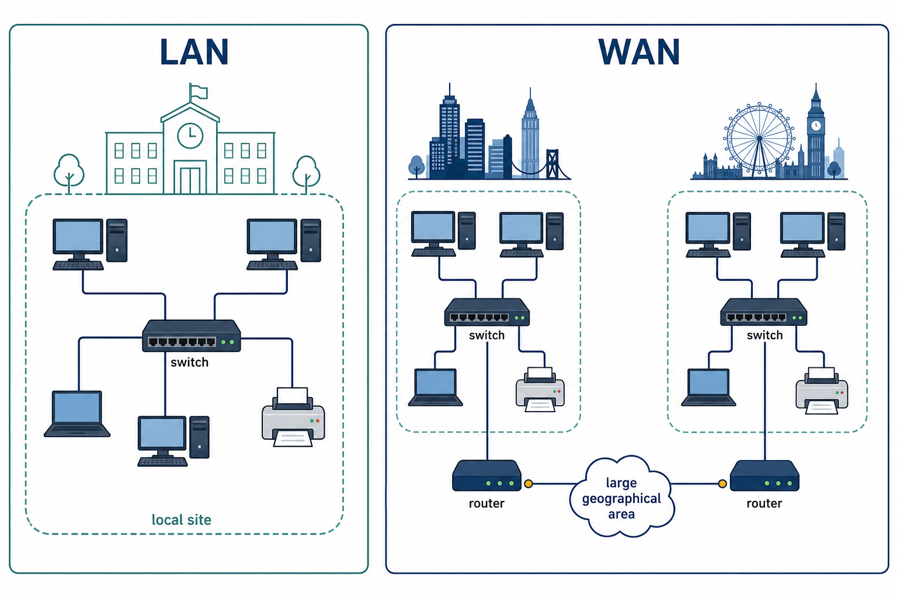

Networking creates shared access; LAN and WAN describe scope
Visual overview
LAN and WAN describe network scope

Visual transcript
- A LAN connects devices within a limited local site under one organisation's control.
- A WAN links LANs over a large geographical area using routers and provider infrastructure.
- LAN and WAN do not by themselves guarantee a particular speed.
Core explanation
What users can share
Networking devices connect systems so authorised users can share files, printers, storage, applications and an internet connection. Networks also support communication, collaboration, central account management and central backup.
Explain a benefit through its cause
A benefit needs a cause and a consequence. For example, storing one managed copy of an examination file on a server allows authorised users to access the current version and lets administrators back it up centrally.
LAN and WAN describe geographical scope
A LAN covers a limited geographical area such as one building or site and is normally owned or managed by one organisation. A WAN covers a large geographical area, links separate sites or LANs and commonly uses telecommunications-provider infrastructure. These terms do not guarantee a particular speed.